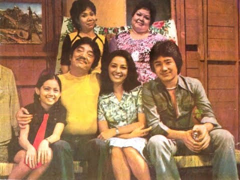
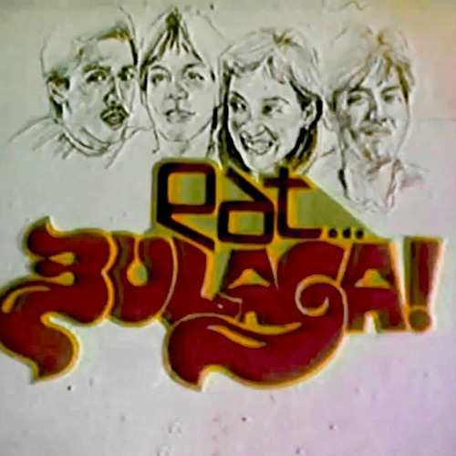
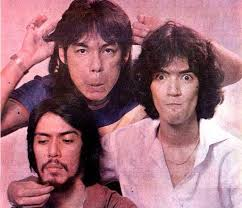
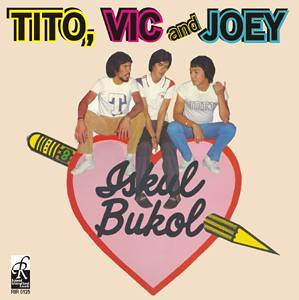

80's TV Shows
JOHN 'en MARSHA

John en Marsha (English: John and Marsha) was a Philippine television sitcom that aired on the Radio Philippines Network (RPN) from May 1973 to July 30, 1990. Created by Adíng Fernando, the series starred Dolphy, Nida Blanca, Rolly Quizon, Dely Atay-Atayan and Maricel Soriano.
A spin-off from the series, John en Shirley, aired on ABS-CBN in 2006 with Dolphy and Maricel Soriano reprising their roles from the original series.
EAT BULAGA
Eat Bulaga! (transl. Eat Surprise!; stylized as Eat... Bulaga!) is a longest-running Philippine noontime variety show currently broadcast through cable and satellite on TV5 (Monday-Saturday) and CNN Philippines (Saturday). Tito Sotto, Vic Sotto, and Joey de Leon, collectively known as "TVJ", with Chiqui Hollman and Richie D'Horsie, have originally hosted the show since its premiere on July 30, 1979, on the Radio Philippines Network
WoW MALi
Wow Mali: Doble Tama (transl. Wow Wrong: Double the Correct) originally known as Wow Mali, is a Philippine gag show aired on ABC (now TV5) from May 25, 1996 to August 2, 2008, February 22, 2009 to June 28, 2015, and aired again on August 26, 2023. It was originally hosted by Joey de Leon and are now being hosted by Jose Manalo and Wally Bayola. It is the longest-running gag show in the Philippines.
Student Canteen

Student Canteen is a Philippine television variety show regarded as the first afternoon variety show on Philippine television. Over a 32-year period, it was broadcast through three different networks: ABS-CBN (1958 to 1965), GMA Network (1975 to 1986) and Radio Philippines Network (1989 to 1990). The late Michael Jackson with the rest of Jackson 5 visited Student Canteen on 1976.
T.O.D.A.S.
T.O.D.A.S. (Television's Outrageously Delightful All-Star Show) was a gag show headed by Joey De Leon, Val Sotto, Richie D Horsie, Maribeth Bichara, Frieda Fonda and Jimmy Santos. A popular Philippine sketch comedy and variety show. It was aired on IBC from 1980 to 1989.
ISKUL BUKOL
Back to Iskul Bukol is the 1999 sequel to the original Iskul Bukol series and produced by IBC-13 in cooperation with Viva Television. Joey de Leon, Mely Tagasa (cameo) and Bing Angeles (cameo) were the only cast members from the original series to return. De Leon's character, Joey Escalera, is now an English literature professor who decides to go back to Wanbol University to teach and wreak havoc like in the old days.